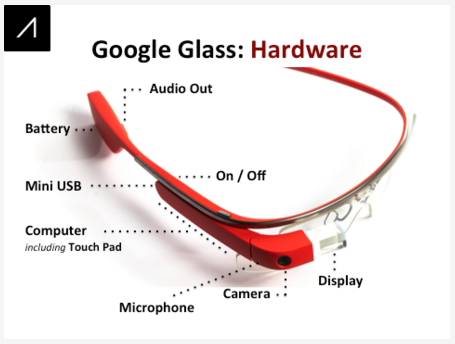
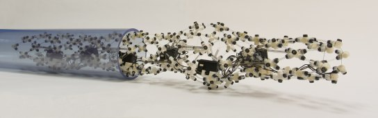
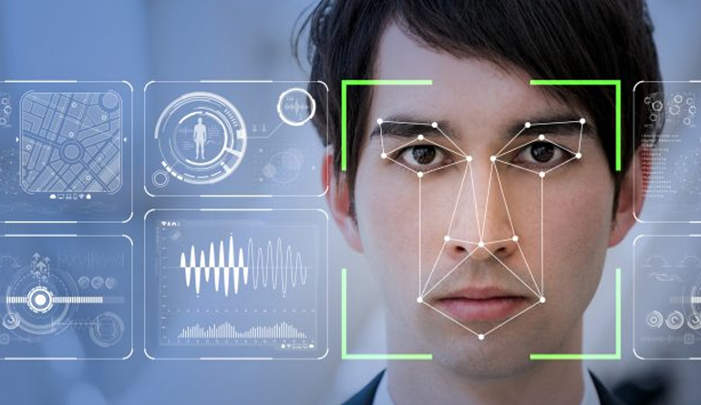

A Professional Programming Journey
When I was young maybe 9 or 10 when I was introduced to computers. I would play around with computers, after sometime I became very interested in programming several years ago. I study the concept of programming. There is no limit to coding, I believe programming is the future. The posibilities of being an excellent programer is hard work and dedication. Here are some images of the programming possibilities.

Google Glass was a big accomplishment in technology development. However I believe that it wasn't as successful for the people who created it as they hoped it to be. Basically because it was the phone recreated all over again.
Biomimetic Worm Bot
this creepy-crawly bot is helping both roboticists and neuroscientists better understand a type of motion called peristalsis — or movement through contracting and expanding of muscle. While this kind of movement is not unique to earth-worms (humans, in fact, do it when swallowing), the ability to propel and maneuver their bodies through tight spaces with it is. To study this motion, the lab created the CMMWorm (Compliant Modular Mesh Worm) — a soft robot with a Lego-like capability to have segments detached and rearranged. Researchers told Gizmodo that they hope this kind of soft robot could be useful in situations as small as medical endoscopies and as large as investigating blocked pipes.
Facial-detecting systems
Facial recognition has existed for decades, but only now is it accurate enough to be used in secure financial transactions and other sensible matters. Face-tracking technology is expanding quickly in China. Both surveillance and convenience play a key part in the increasing popularity of this arguably invasive tech. This new development might transform everything from policing to the way people interact every day with banks, stores, and transportation services. Face++, a face-detection software, is already being used in several popular apps. It is possible to transfer money through Alipay, a mobile payment app, using only your face as credentials. Meanwhile, Didi, China’s equivalent to Lyft or Uber, uses the Face++ software to let passengers confirm that the person picking them up is a legitimate driver. Local governments are using the same software to identify suspected criminals in video from surveillance cameras, which are omnipresent there. Now the company Baidu is developing a system that lets people pick up rail tickets by showing their face. They are also already working with the government of Wuzhen, a historic tourist destination, to provide access to many of its attractions without a ticket. This involves scanning tens of thousands of faces in a database to find a match, which Baidu says it can do with 99 percent accuracy.